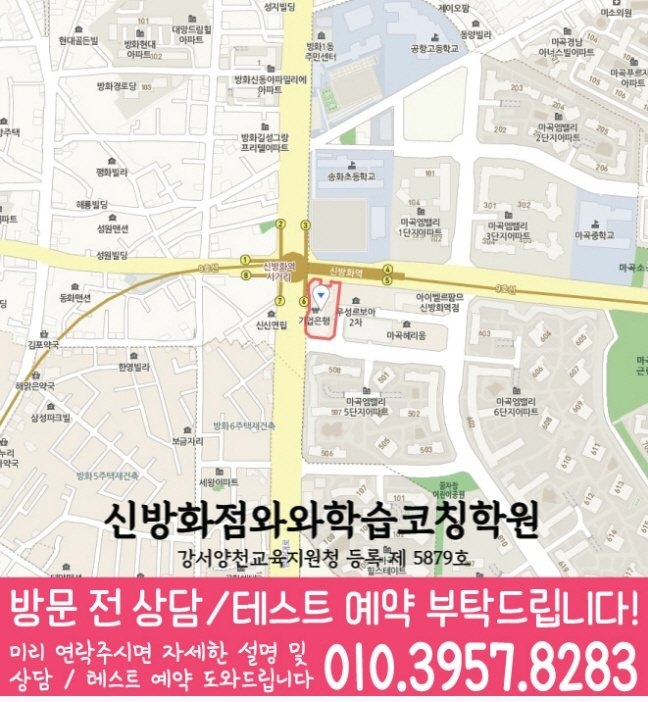

HIGH SCHOOL MATH COACHING
마곡동 고등수학학원
마곡동 고등 수학 안내입니다. 실제 지점의 대상 학년·과목과 방문·비용 조건을 비교하고 학년별 학습 준비로 이어집니다.
신방화점 과목·학년 확인
자료에서 확인한 수학 수강 학년: 고1~고3. 현재 모집 여부와 원하는 요일·시간은 상담에서 확인해 주세요.
아래 내용은 학습 방향을 정리한 가이드입니다. 수강 여부는 지점별 확인 범위를 기준으로 판단하세요.
마곡동 고등 수학 수강 비교에서 먼저 확인할 것
신방화점 자료에서 확인할 범위는 수학 고1·고2·고3입니다. 현재 모집, 실제 과목·요일·시간은 별도 확인이 필요합니다.
자료의 대상 학년
자료에 있는 학년과 현재 모집 여부를 나눠 확인하세요. 현재 배우는 학교 과목과 희망 수업 과목이 일치하는지 확인하세요. 고등 학년이 기재되어 있다는 이유만으로 모든 선택과목이나 특정 학교 대비반이 운영된다고 판단하지 않습니다.
현재 학교 과목·범위
최근 수학 문항의 첫 식·조건·계산 줄과 도움 없이 다시 푼 기록을 준비하세요. 학교 과목명과 시험 범위표를 함께 놓고 필요한 도움을 적으세요.
실제 방문·비용
신방화점와와학습코칭학원의 방문 주소는 서울 강서구 방화대로 294 마곡더블유타워 505입니다. 운영 참고와 교습비 자료에서 희망 일정·횟수·시간을 확인하세요.
고등 수강 비교와 고1·고2 학습 준비의 차이
이 페이지는 신방화점의 실제 고등 수강 범위와 방문·비용 조건을 비교하는 안내입니다. 학년별 안내는 학생이 준비할 풀이·문장 예시와 상담 질문을 다룹니다.
현재 배우는 학교 과목과 희망 수업 과목이 일치하는지 확인하세요. 고등 학년이 기재되어 있다는 이유만으로 모든 선택과목이나 특정 학교 대비반이 운영된다고 판단하지 않습니다.
마곡동 학교 참고 목록을 활용하는 방법
제공된 마곡동 학교 참고 목록에는 공항고등학교·한서고등학교 등이 있습니다. 목록은 해당 학교 대비반·제휴·재원생의 근거가 아닙니다. 학생의 실제 범위표·교과서·평가 자료를 준비하세요.
학생의 실제 과목명·진도·학교 평가 자료와 센터의 개설 범위는 따로 대조하세요. 학교 이름만으로 해당 학교 맞춤반이나 수강 성과를 확인할 수는 없습니다.
CENTER INFORMATION
신방화점 기본정보와 수강 조건
등록 학원명과 등록번호
신방화점와와학습코칭학원
강서양천교육지원청 등록 제 5879호
방문 주소와 상담 지점
서울 강서구 방화대로 294 마곡더블유타워 505
마곡동 안내에 연결되는 실제 지점은 신방화점입니다. 동네마다 별도의 학원이 등록되어 있다는 의미는 아닙니다.
신방화점 전체 안내 주소로 길찾기운영시간과 학생 시간표
평일 오후 1시 이후
주말 정규 수업은 운영하지 않습니다.
운영시간 참고 안내와 학생의 실제 수업 시간표는 다릅니다. 희망 과목과 요일을 함께 전달해 주세요.
과목별 수강 조건
자료에서 확인한 수학 수강 학년: 고1~고3.
수강 가능한 학년과 현재 모집 중인 반은 다를 수 있습니다.
수강 조건과 함께 살펴볼 교사 안내
신방화점 선생님 소개
선생님의 소개와 지도 중점을 읽고, 학생이 어려워하는 과정과 필요한 도움을 상담 질문으로 정리해 보세요.
학습 안내와 함께 읽기
학생과 학부모에게 필요한 교육정보
지금 필요한 공부 방법과 상담 질문을 골라 읽어 보세요.
학년·과목별로 다음 학습 살펴보기
기초부터 심화까지, 지금 필요한 학습 단계는?
학습 중점과 확인 과제를 읽고 학생의 학교 범위와 현재 이해에 맞게 계획해 보세요.
교육비 적용 조건과 확인 자료
TUITION GUIDE
교육비와 수업 구성
신방화점에 연결된 교육비 안내입니다. 금액뿐 아니라 적용 학년, 수업 횟수와 시간, 추가 프로그램 항목을 함께 확인해 주세요.
신방화점 수업료 안내
| 대상 | 과목·과정 | 수업 구성 | 안내 금액 |
|---|---|---|---|
| 중등 | 영어·수학·사회 안내 | 주 3회 100분, 와와 3타임 + 공부9도 1타임 | 247,000원 |
| 고등 | 영어·수학·사회 안내 | 주 3회 100분, 와와 3타임 + 공부9도 1타임 | 280,000원 |
- 센터 안내 자료에 기재된 금액입니다. 수강 가능 학년, 과목, 수업 시간과 추가 프로그램에 따라 달라질 수 있으므로 최종 교습비는 센터에 확인해 주세요.
등록 전에는 현재 게시된 교습비와 최종 결제 금액을 확인해 주세요. 안내표만으로 모든 과목의 합산 비용이나 교재비 포함 여부를 판단하지 않습니다.
마곡동 학교 자료와 통학 준비
초등학교 참고 목록
서울가곡초등학교 · 서울공진초등학교 · 서울공항초등학교 · 서울송화초등학교
중학교 참고 목록
공항중학교 · 마곡중학교 · 마곡하늬중학교 · 송정중학교
고등학교 참고 목록
공항고등학교 · 한서고등학교
학교 목록은 지역 상담 참고 정보입니다. 제휴나 재원생 여부, 해당 학교 대비반 운영을 뜻하지 않습니다. 사용하는 교재와 실제 평가 범위는 학교 자료로 확인하세요.
신방화점 고등 상담 전에 준비할 질문
최근 수학 문항의 첫 식·조건·계산 줄과 도움 없이 다시 푼 기록을 준비하세요.
- 자료에 있는 대상 학년 중 현재 모집 중인 학년·과목은 무엇인가요?
- 학교의 현재 과목·시험 범위와 필요한 보완을 전달하면 어떤 수업 가능 여부를 확인할 수 있나요?
- 희망 요일·시간과 실제 가능한 일정이 맞나요? 주말 수업 조건도 별도로 확인할 수 있나요?
- 과목·횟수·시간별 교습비, 교재비와 추가 비용은 어떤 지점 자료로 확인하나요?
마곡동 고등 수학 상담 질문
신방화점의 고등 수학 수강 대상은 확인됐나요?
신방화점 자료에서 확인할 범위는 수학 고1·고2·고3입니다. 현재 모집, 실제 과목·요일·시간은 별도 확인이 필요합니다.
고1·고2 학습 안내와 이 마곡동 고등 수학 안내는 어떻게 다른가요?
이 페이지는 실제 지점의 고등 수강 범위·교육비·방문 조건을 비교하는 안내입니다. 학년별 페이지는 현재 과목의 풀이 또는 문장 예시와 상담 질문을 정리합니다. 실제 수업 가능 과목은 별도 확인해야 합니다.
내신 대비나 집중 과정이 실제로 운영되나요?
학교 참고 목록이나 일반 학습 안내만으로 특정 대비반·집중 과정의 운영을 확인할 수 없습니다. 실제 과목, 학교 범위와 희망 일정에 맞는 수업 가능 여부를 센터에 문의하세요.
마곡동 학교별 준비에는 무엇이 필요한가요?
제공된 마곡동 학교 참고 목록에는 공항고등학교·한서고등학교 등이 있습니다. 목록은 해당 학교 대비반·제휴·재원생의 근거가 아닙니다. 학생의 실제 범위표·교과서·평가 자료를 준비하세요.
신방화점 방문 시간과 교육비는 어떻게 확인하나요?
방문 주소는 서울 강서구 방화대로 294 마곡더블유타워 505입니다. 운영 참고는 평일 오후 1시 이후이며 주말 정규 수업은 운영하지 않습니다. 센터별 교육비 안내 자료에서 과목·횟수·시간, 교재비와 추가 비용을 확인하고 상담 가능 시간과 최종 금액을 문의하세요.
상담 후 비교표에 남길 확인 결과
과목·학년별 가능 여부
신방화점 자료에서 확인할 범위는 수학 고1·고2·고3입니다. 현재 모집, 실제 과목·요일·시간은 별도 확인이 필요합니다.
확인한 자료와 질문
최근 수학 문항의 첫 식·조건·계산 줄과 도움 없이 다시 푼 기록을 준비하세요. 실제 과목과 범위에 맞는 수업이 가능한지 받은 답변을 남기세요.
일정·비용 확인일
상담한 날짜와 확인한 요일·시간·횟수·비용을 적으세요. 미확인 항목은 확정된 조건과 구분해 다시 문의합니다.
마곡동 주변 고등수학학원 페이지
같은 카테고리 안에서 가까운 지역 페이지로 이동할 수 있도록 정리했습니다.
내용 확인·수정: · 코칭센터 편집

